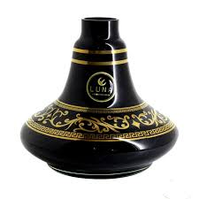
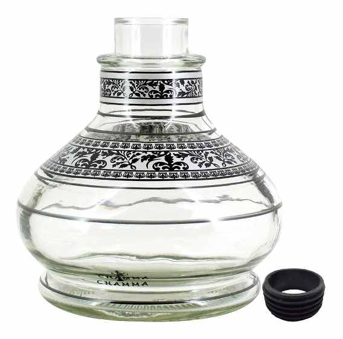
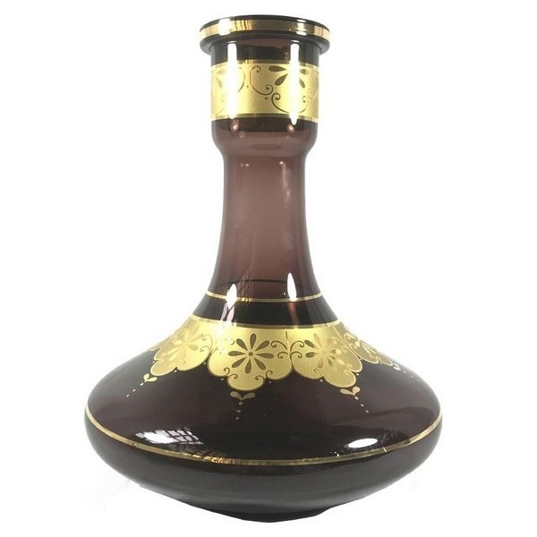
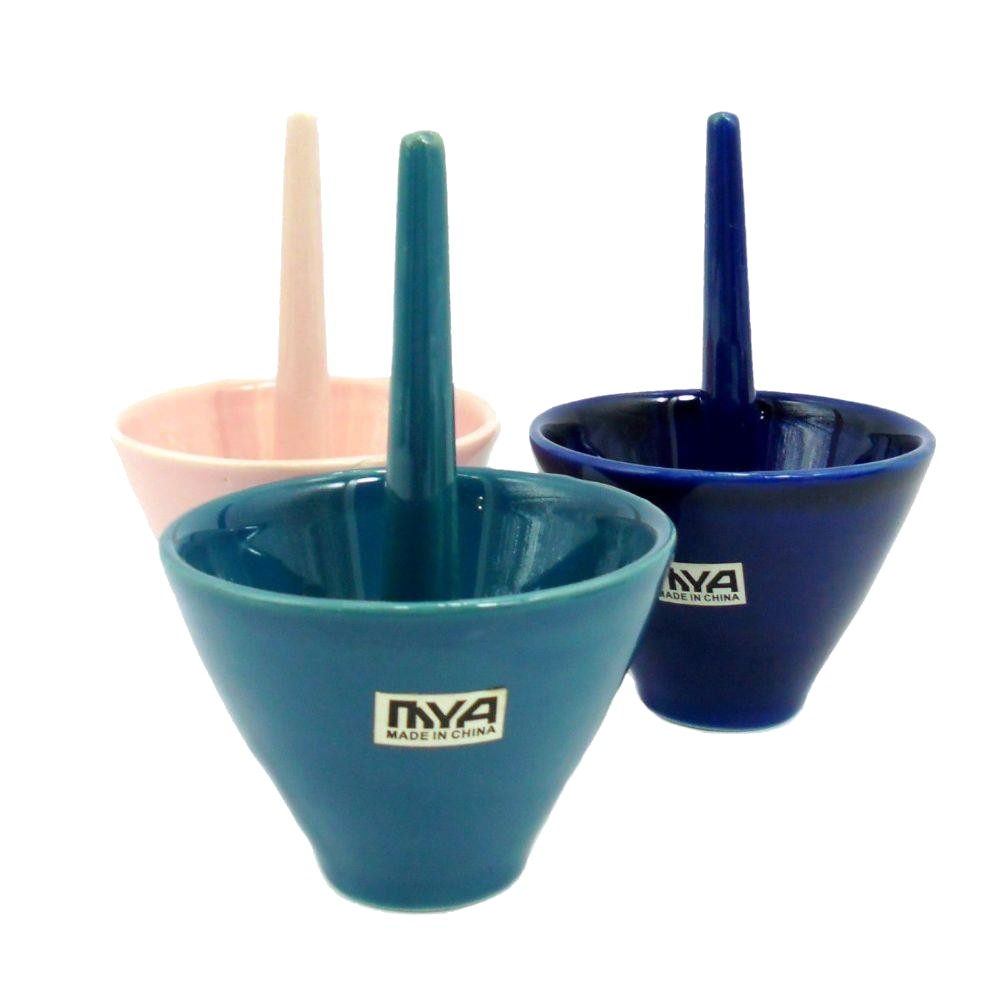
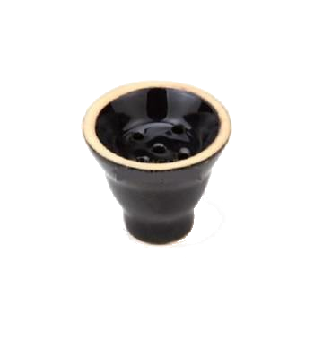
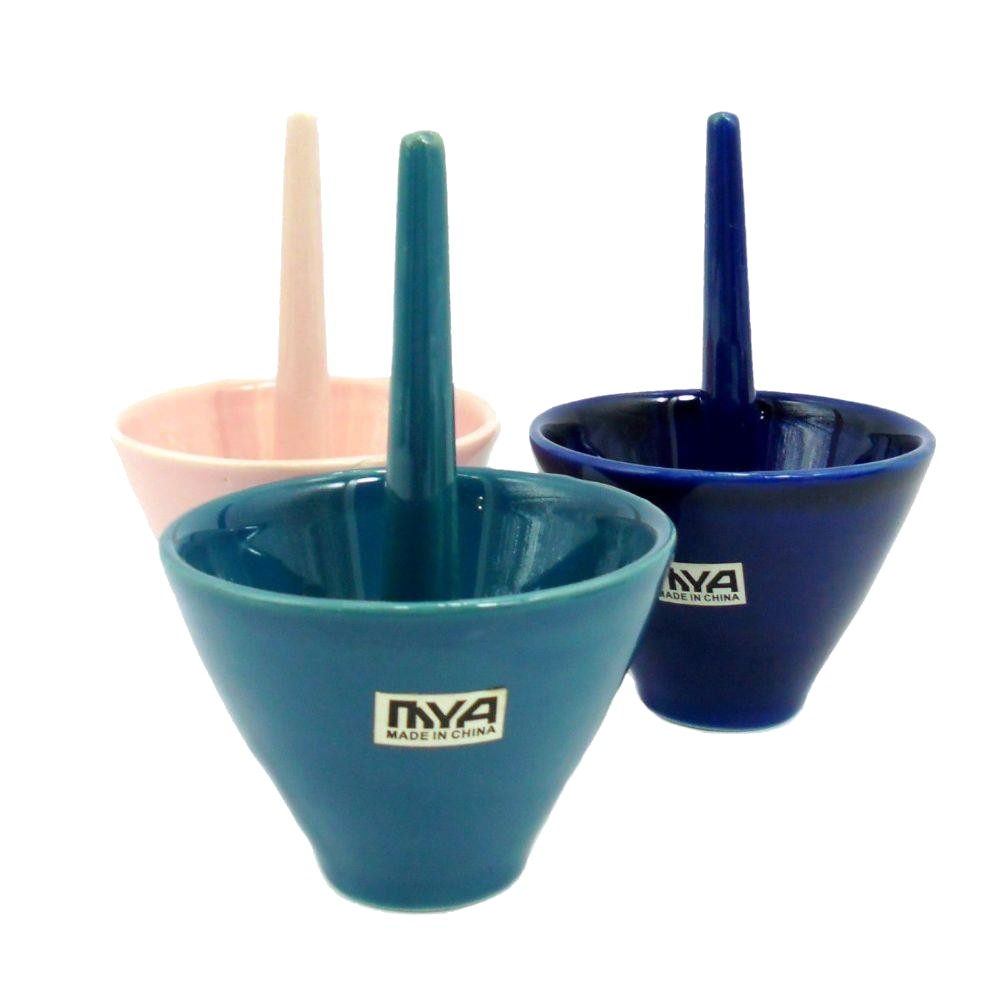
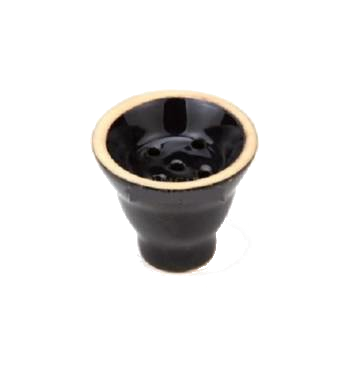
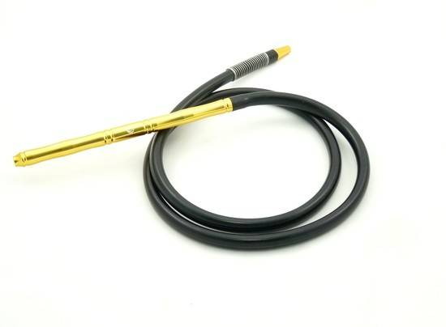

Existem muitas versões sobre a origem do narguilé, uma das mais disseminadas é a de que sua origem tenha se dado na Índia, nas regiões de fronteira com o Paquistão. Os primeiros narguilés eram feitos com coco e madei ras muito simples e rústicos (evidências históricas mostram narguilés na Pérsia e na Mesopotâmia, de onde vem o nome Narguilé, originado do persa Nārgil, que significa coco ), a versão mais divulgada conta que o narguilé teria sido inventado na Índia no século XVII, pelo médico Hakim Abul Fath, como um método para retirar as impurezas da fumaça.
É conhecido como Arguile ou Narguile nos países Líbano, Síria, Jordânia, Turquia, Iraque, Albânia, Grécia, Israel, Romênia e Bulgária. A diferença entre Narguile e Arguile esta no fato de que na língua árabe muitas vezes o “n” inicial pode ser suprimido, o que não altera o sentido da palavra é apenas um detalhe linguístico. Já em países como Egito, Bahrein, Kuwait, Marrocos, Qatar, Tunísia, Arábia Saudita, Somália e Iêmen, ele é chamado de Shisha, que também tem origem persa, mas significa vidro ou garrafa. Em outros lugares, ele também é chamado de Hookah, que vem do árabe, e significa pote pequeno ou jarro, esse nome é geralmente usado no Irã e na Índia.
O arguile é um cachimbo de água utilizado para fumar. Há diferenças regionais no formato, e no funcionamento, mas o princípio comum é o mesmo, a fumaça passar pela água, antes de chegar ao fumante. É tradicionalmente utilizado em muitos países do mundo, em especial no Norte da África, Oriente Médio e Sul da Ásia. Apesar de ter suas origens na Índia, foi no Oriente Médio que ele obteve a fama e a popularidade, devido ao seu longo percurso de difusão, através mundo.
O narguile é formado pelas seguintes peças: Base (jarro ou vaso): peça central do narguilé; é semelhante a um vaso. É onde se coloca a água (ou, embora não seja tradicional-, com outros líquidos, como áraque, sucos ou essências naturais). Geralmente é feita de vidro, metal ou cerâmica; algumas são ornamentadas com desenhos.
  Fornilho (rosh, cabeça ou cerÂmica): peça de barro ou cerâmica onde coloca-se o tabaco aromatizado (também chamado de essência) e, por cima deste, o carvão brasa.
 



Mangueira (condutor): é por onde se aspira a fumaça. Uma pinta termina numa piteira, e a outra encaixe-se na parte superior do corpo do narguilé (acima da água). Pode haver mais de uma mangueira para que várias pessoas fumem juntas (porém estes usuários não poderão "puxar" a fumaça simultaneamente). Em narguilés usados em locais públicos como bares, frequentemente usa-se uma peça plástica removível na ponta da piteira que pode ser lavada ou descartada a cada uso, ao contrário da mangueira em si que não deve nunca ser lavada, pois pode oxida, criando assim, partículas de fuligem que atrapalham a aspiração da fumaça.
